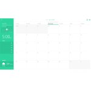
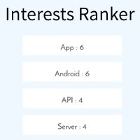

ANIRUDH
GOEL
Greetings! Anirudh Goel welcomes you!
Hey friend, currently studying Bachelors of Technology (B. Tech.) at Maharaja Agrasen Institute of Technology, I'm a follower of my instinct and passion which leads me to have considerable knowledge in the fields of Web Development, Graphic Designing, Blogging and more.
Hey friend, currently studying Bachelors of Technology (B. Tech.) at Maharaja Agrasen Institute of Technology, I'm a follower of my instinct and passion which leads me to have considerable knowledge in the fields of Web Development, Graphic Designing, Blogging and more.
My Projects


Whatsapp Emoticon Suggestions
Chrome Browser extension to convert text smileys to WhatsApp Emoticons and also provide suggestions of similar smilies (with shortcuts) for Whatsapp Web.
Github | Chrome Download | Mozilla Download
Github | Chrome Download | Mozilla Download

Educational cum Fun Chatbot

Online Store APIs
A set of PHP APIs ready to be used with an Online Store Mobile App with verification and automated setup. Also, provides sample data and simple testing platform to test various functionalities of the API.
Github
Github

Terminal Dictionary
Simple Python script to get the meaning of any word, with disambiguations, directly in the terminal.
Github
Github
Run .py on XAMPP
A step by step guide to configure XAMPP and modify Python files to run them as CGI on XAMPP, similar to PHP files. It can be particularly useful when you want to make some quick APIs in Python without using any Framework.
Github
Github
Stock Monitor and Portfolio Manager
In this web application, user can enter the information of stocks bought by him and the application obtains the live prices of these stocks along with net profit/loss & displays them in a Portfolio.
Github
Github


My Social Network
This was project that I made while learning CSS.
A HTML and Vanilla CSS based project that demonstrates the link to all of my social network sites.
Github
Github

Phottendance
I developed the web portal of this app that completely automates attendance taking. Just click a photograph of the class and rest is managed by app.
Github
Github

Car Game C++
This project is a simple Car Game using C++ graphics.h library which I made by 3 hours continuous coding while learning C Graphics in college.
Github
Github
Internships & Experiences

Academistic
Link temporarily unavailable
Full Stack Developer
June '16 - July '16
- Implemented Lazy Load on Search Result Page
- Redesigned entire Login System using OTP Verification
- Integrated a new multi-level Location Based Search system using AJAX
- Revamped the Institute Profile Page by integrating a new Rating display system, adding effects like animations when element gets visible
- Added slugs for all the Institute Profile URLs to improve SEO

This is the ACM chapter of my college. Here I'm responsible for the development, deployment and maintenance of the website. I made the Home Page and Contact Us page and deployed the website to our server. The major challenges we overcame while remaking of the site were to make it completely responsive and keep its footprint to minimum, so do have a look at it to see how we succeeded!
Developed the Product Order form for this Instagram based startup using Firebase BaaS. The form is implemented with features like Logic Jump, Image storing.

- Hosted a Mozilla Awareness session at Hack@NSIT Hackathon.
- My own Mozilla Blog to present my experiences.
- As the Club Lead, inspired my fellow classmates to join Mozilla.

- Designed Logo of Igniting Young Minds.
- Collaborated with a team of 4 members to make Posters for LFT.
- Made posters on social issues undertaken by LFT.
- Recruited 5 Associate Members for my team.
- Gained valuable public speaking experience by addressing multiple conferences.
- Raised 7 foreign candidates for coming to India for Internships.
Technologies Known
Python
Django : Python Framework
Flask : Python Micro Framework
PHP
Slim : PHP Micro Framework
JavaScript (JS)
Bootstrap : CSS Framework
jQuery : JS Library
Git
Django : Python Framework
Flask : Python Micro Framework
PHP
Slim : PHP Micro Framework
JavaScript (JS)
Bootstrap : CSS Framework
jQuery : JS Library
Git
MySQL RDBMS
PostgreSQL
SQLite3
Firebase BaAS
Heroku CLI
APIs
Asynchronous JavaScript and XML (AJAX)
JavaScript Object Notation (JSON)
OAuth Authorization (API)
PostgreSQL
SQLite3
Firebase BaAS
Heroku CLI
APIs
Asynchronous JavaScript and XML (AJAX)
JavaScript Object Notation (JSON)
OAuth Authorization (API)
Cookies and Browser Storage
Chrome Browser Extensions
Firefox Browser Extensions
xHTML
C/C++
Adobe Photoshop
Adobe Illustrator
Wordpress
Joomla
Chrome Browser Extensions
Firefox Browser Extensions
xHTML
C/C++
Adobe Photoshop
Adobe Illustrator
Wordpress
Joomla
When I'm not working...